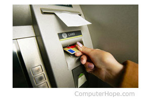

- What is it?
- What is used for?
- What types?
- What is composed of?
Computers
What's a computer is used for?
Today, many types of computers are used in our everyday life. In most parts of the world, it's impossible to use
a product or service that doesn't utilize a computer. Below are examples of the industries, areas, and different
fields using computers.
Banks and financial
Computers play a significant role in handling all of the world's money. Below are examples of how computers are
used in the financial market and places dealing with money.

- ATM - When you make a withdraw from an ATM, you are using a computer.
- Digital currency - When depositing money in a bank, it is stored as a digital record. A
computer keeps track of how much money is in your account.
- Trading - Stocks and commodities are traded using computers. In fact, today there are even
thousands of computers using advanced algorithms that handle trading without needing humans.
Business
Business is another big sector for computers and most money earned and spent is done using a computer. Below are
some of the examples of how computers are used in business.
- Register - If the business deals with selling goods to a consumer (e.g., a grocery store),
a cash register, which is a computer, is used to complete transactions.
- Workers computer - Many businesses assign each employee a computer that allows them to
produce work and solve problems for the company.
- Server - If the business uses computers, connects to the Internet, or handles e-mail and
files, a server is used to help manage everything.
Communication
Today's communication around the world is almost all digital and handled by computers. Below are examples of how
computers are used in the communication industry.
- Smartphone - If you have a smartphone, you have a computer in your pocket.
- E-mail - More electronic mail (e-mail) is sent today than postal mail (snail mail), and
computers handle all creation and distribution of that e-mail.
- VoIP - All voice over IP communication (VoIP) is handled and done by computers.
- Computer-assisted speech - Those who are disabled or cannot speak can use a computer to
help them communicate. For example, Stephen Hawking uses a computer to communicated.
- Voice recognition - Any phone or another system that uses voice recognition is using a
computer to translate what is heard into text or other data that can be understood by the computer.
Designed by Mohamed Anis MANI © for the Web course for 2ndTI class